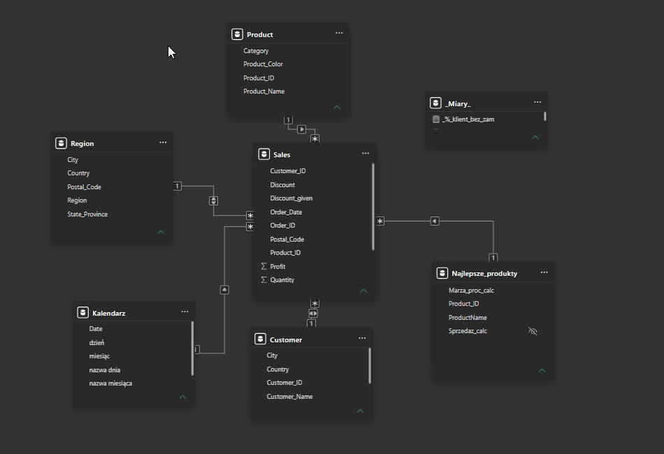
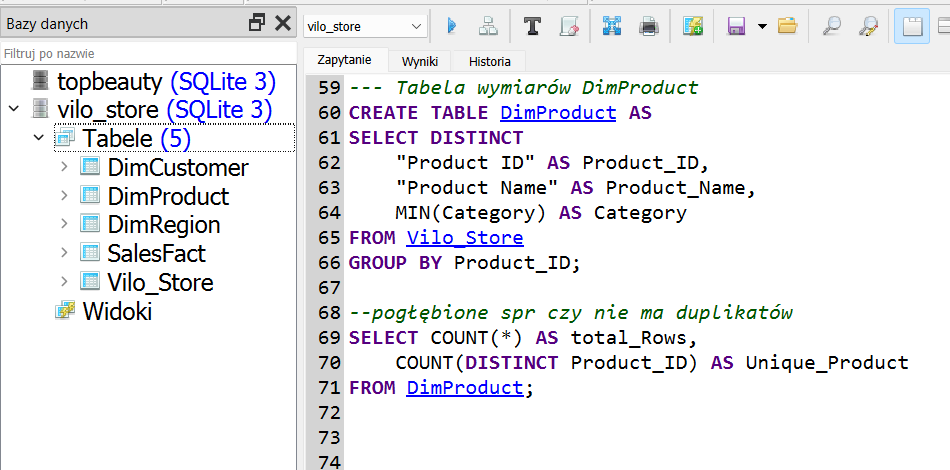

Problem
I wanted to reproduce a complete company analytics process (ETL) end to end – not just build a chart.
Solution
Kaggle Superstore sales data, anonymised and turned into my own fictional brand Vilio: cleaned in pandas, loaded into SQLite as a star schema, transformed in Power Query and visualised in Power BI with DAX measures.
Result
An interactive sales report with KPI cards, time intelligence, slicers and navigation – in a consistent visual style with my own logo.

ETL process
- Data cleaning in Python/pandas – type conversion, filling gaps, removing duplicates, export to a clean CSV.
- Export to SQL – data loaded into SQLite with a load_to_sql() function.
- Data modelling – fact and dimension tables (SalesFact, DimRegion, DimCustomer, DimProduct) in a star schema.
- Power Query – further transformations: date formats, splitting columns, replacing values.
- Data model – one-to-many relationships, a calendar table for time intelligence and a separate table with all DAX measures (e.g. margin %, discounted orders %, new customers).
- Visuals & UI/UX – KPI cards, line, bar and donut charts, slicers with a “clear filters” button, navigation icons and conditional formatting.
Plans
- A “Summary” page with key KPIs and trends
- Error handling (try/except) and logging in the cleaning script
- Tooltips in Power BI for better interaction
- Publishing the report in Power BI Service
Screenshots


Lessons learned
- Working on ETL in Python taught me how important error control and data validation are.
- Modelling data in SQL showed me that well-designed relationships make analysis much faster.
- Power BI needs attention to UI detail – even small elements (a colour, an icon, a slicer) change how the report is received.
- Creating my own brand (logo, name, style) gives a project character and professionalism.